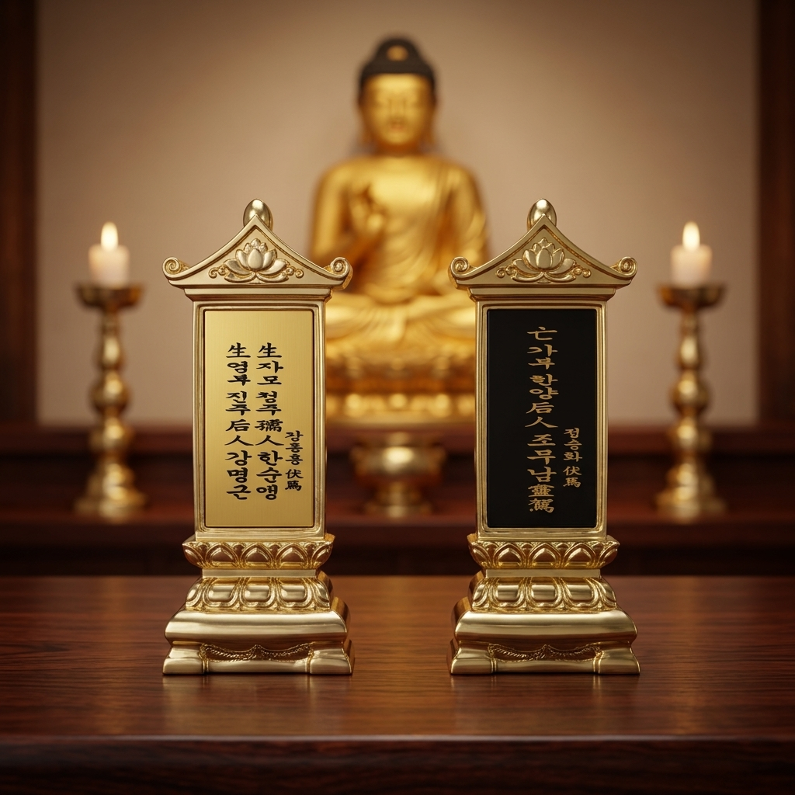

대상: 살아계신 본인 및 가족 (금장 생패 봉안)
생전에 빚을 갚고 공덕을 닦는 예수재를 올리며, 임종 후 추가 비용 없이 사후 영가 위패봉안으로 자동 연계/승계되는 평생 보장 프로그램입니다.
대상: 작고하신 부모/조상 영가 (흑칠 망패 봉안)
돌아가신 영가님들을 청정 위패전에 즉시 안치하고, 스님의 매일 예불과 연 15회 제례로 대를 이어 정성껏 극락왕생을 추모합니다. (잔여 1,000기 한정)
대상: 무지개다리를 건넌 소중한 반려동물
가족으로 함께하며 위로를 주었던 인연의 넋을 기리고, 부처님의 자비 속에서 더 좋은 인연으로 환생(극락왕생)하도록 스님이 정성을 다해 49재 및 맞춤 천도재를 봉행합니다.
365일 매일 예불 축원, 연 15회 이상의 체계적인 합동 제사 및 기일 단독 제사 대행, 훼손 걱정 없는 최첨단 항온·항습 청정 위패전에서 대를 이어 모십니다.
소원사 도량 및 대웅전(큰법당) 전경
• 상담 시간: 연중무휴 오전 09:00 ~ 오후 05:00
• 사전 예약: 방문 전 전화 주시면 법사님 1:1 맞춤 안내
• 주차 편의: 사찰 경내 대형 전용 주차장 완비
살아생전에는 참회의 공덕을 짓고,
사후에는 대를 이어 평안을 모십니다.
대상: 살아계신 분 본인/가족
"건강할 때 스스로 닦아 안심하는 큰 공덕"
사후에 자손들이 올리는 백 번의 제사보다, 살아생전 본인의 의지로 직접 빚을 갚고 공덕을 쌓는 예수재 한 번의 공덕이 비교할 수 없이 지극합니다.
생전 예수재 동참 시 사후에 추가 비용 없이 소원사 위패전의 영구 위패봉안으로 자동 승계/전환되어 사후 관리까지 자비롭게 이어집니다.

소원사 위패 실물 (좌: 생전 금장 생패 / 우: 사후 흑칠 망패)
"생전 예수재 동참 시 임종 후 사후 관리까지 사찰이 책임지고 연계해 드립니다."
살아생전 주지 스님과 함께 죄업 참회 및 10대 공덕을 쌓으며 삶을 평안하게 가꿉니다.
예수재 동참 비용은 위패봉안과 동일하며, 임종 시 추가 비용 없이 영가 위패로 자동 전환됩니다.
소원사 위패전에 영구 안치되어 스님의 매일 예불과 연 15회 정기 제사를 대행합니다.
※ 이미 작고하신 조상 위패봉안 및 반려동물 천도재는 사찰 종무소에서 가족 맞춤 일정으로 즉시 봉행됩니다.
대상: 이미 돌아가신 부모/조상 영가
"총 2,000기 중 잔여 1,000기 한정 명당 봉안"
이미 작고하신 조상님들을 소원사 청정 위패전에 모시고 대를 이어 영구히 안치하여, 정성을 다해 안심 관리해 드립니다.
기일 단독 제사 대행(제수비 20만원 별도) 및 49재, 100일재, 이장재 등 가문 사정에 맞춘 제례 의식을 법도대로 엄숙히 올립니다.
가족으로 함께한 소중한 반려동물의 극락왕생과 선처 환생을 발원하는 맞춤 49재 및 전용 천도재를 정성껏 봉행합니다.